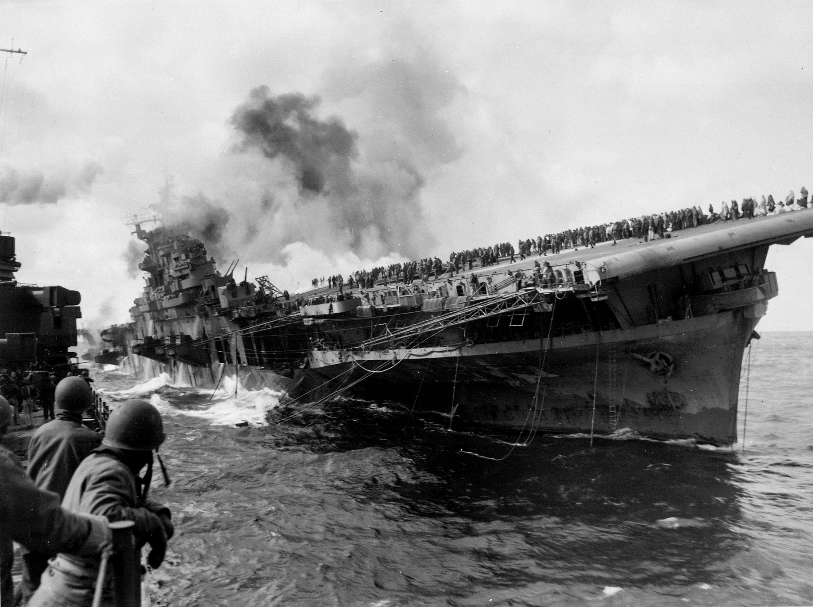
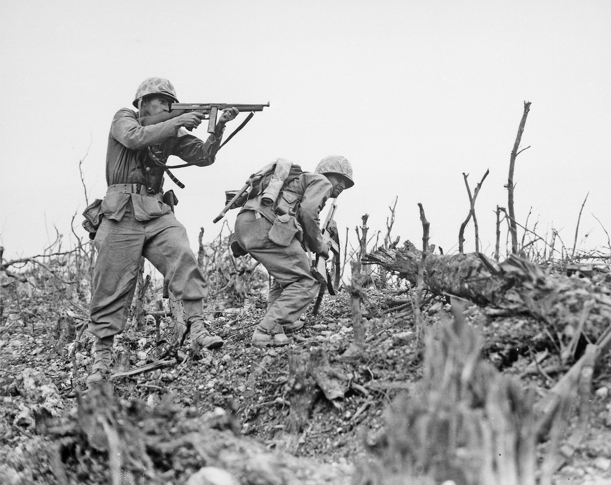
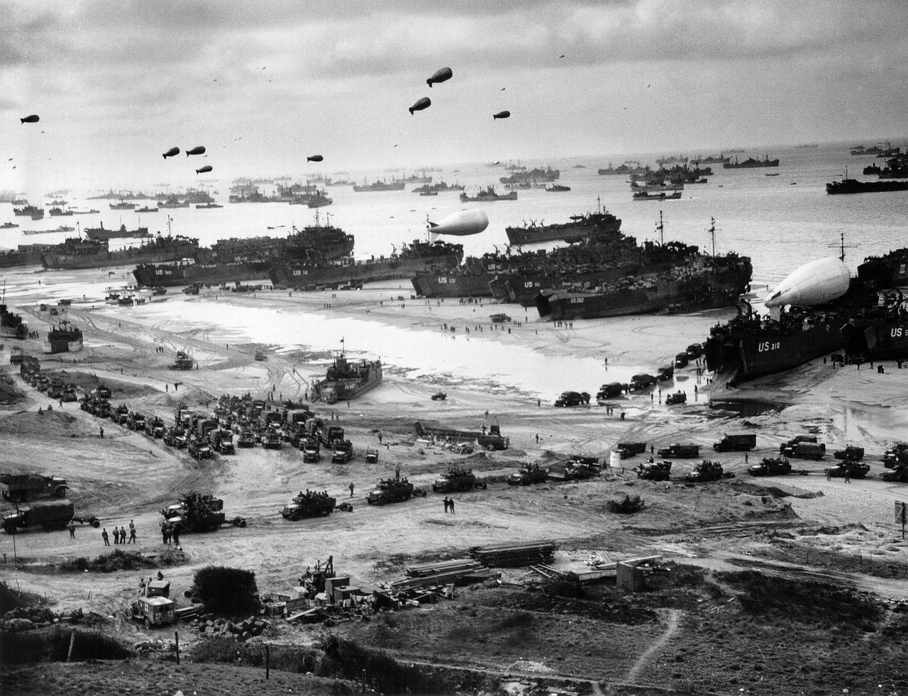
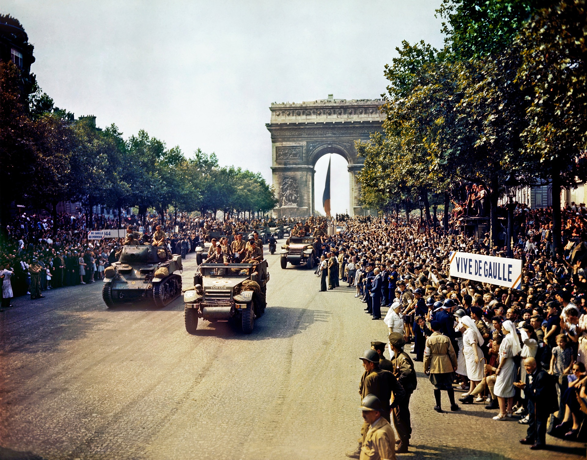

America in World War 2
Background
America is a large sized country in North America. They had a large population of 130 million in 1939. The 1930’s was a troubling time for The United States. The Great Depression was in full effect and 25% of the population was unemployed. Millions of people had lost everything they had. The stock market crash of 1929 had destroyed the world's economy. The banks had failed and the economy tanked. This put the United States in a bad spot before the war started. The only thing that saved their economy was the war-time production jobs that were needed to fight the war. Franklin Roosevelt took office in 1933 and was making major changes to the economy in hopes to save it. He lead many government plans like the New Deal that were trying to restart the economy and create jobs. He would be a crucial character in the massive war-time production economy that was going to have to be made.
Build Up to War
America had remained neutral in the war's outbreak. They didn’t want to get involved in Europe's problems again. American had its own problems to deal with first. The depression had crippled the nation. Americans wanted neutrality but they also knew that there was a chance that they could get pulled into the war. Americans reluctantly prepared for war and it came on December 7th, 1941
start of the War
On the morning of December 7th, 1941, Japan attacked the United States. The unprovoked attack on Pearl Harbor in Hawaii had killed 2,400 Americans. The next day, war was declared by Congress. The attack had sunk or damaged 21 ships but failed to damage any aircraft carriers. This would prove to be a very important fact. The aircraft carriers would soon be shown to be the most important part of the Navy and none of them had been damaged.
Photo of a sinking Navy ship
Image by WikiImages from Pixabay
Joinng the Fight
America would soon find itself in a war on two fronts. America declared war on Germany on December 11, 1941. The Atlantic ocean would be the first challenge America would face in the war. German U-Boats were sinking tonnes of supplies that were being sent to Britain. Britain, and island, was surrounded by Germany and was hanging on by a thread. American supplies were keeping Britain in the fight but convoys in the Atlantic were the target of packs of u-Boats. Millions of pounds of supplies were on the ocean floor instead of in Britain because of the ever increasing presence of U-Boats. The most important part of the battle in the Atlantic came when British scientists sent a shipment of vital information regarding developments in jet propulsion and more importantly, radar. Americas production economy was now booming and would be used instead of Britains for the making of Magnetrons. These new radar devices were 100 times more powerful than previous radar devices and would be the turning point in the Atlantic. The U Boats could now be seen by every ship in the convoy and attacked. The U Boats lost all of their stealth and became ineffective.
Turning Point
The battle in the Pacific would start with Japan on the offensive but would soon turn. On June 4th, 1942, the battle of Midway started. This 3 day long naval and air battle was a decisive American victory. The operation to take the island of Midway was known about to the Americans in advance so an ambush was planned. This battle resulted in the sinking of 4 Japanese aircraft carriers. The Japanese had a much smaller production rate than the Americans and couldn’t replace sunk ships as fast as their enemy. The battle would be the turning point of the war and the Japanese would now permanently be on the defense.
Photo of an american soldier in battle
Image by Welcome to all and thank you for your visit ! ツ from Pixabay
North Africa
A side scene of the war was in northern Africa. This is where the german and Italians held land to stop an invasion of southern Europe. The Italians were trying to recreate the Roman empire and wanted all of the land around the mediterranian. The Allies had a few successful campaigns in north africa that ultimately lead to the invasion of Italy and southern France. The landings were very successful in securing beachheads that would funnel troops and equipment into Europe.
Liberation of France
The war in Europe also took a turning point on June 6, 1944. The invasion of Normandy would be a crucial part of defeating the Germans. The landings were the opening up of the continent. The path to Paris was quick and the city was liberated on August 25, 1944. The country had been occupied for 4 years by the Nazis. The race to Berlin was a hard path but one that had to be made. The Soviets were also racing to Berlin and the city would be captured by them on May 7, 1945. The European theater claimed approximately 250,000 American lives lives.
Photo of the landings at Normandy
Image by WikiImages from Pixabay
End of the War
The war in Europe ended in May but the fight in the pacific was far from over. The ameican island hopping campaign was succeeding but at a higher price each time. As the Ameicans got closer to japan, the more the islands that they were invading would have better and more defenses. The battle to retake the Philippines alone would cost 23,000 american lives. The land invasion of Japan was estimated to cost well over 1 million american lives and 6 million Japanese. But a land invasion would be necessary thanks to a secret research operation called the Manhattan Project. This was a project to develop a nuclear weapon. Originally meant for use against Germany, the bomb would now be used against Japan. The first successful detonation of a nuclear bomb was on June 16th, 1945 in Alamogordo, New Mexico. The bombs were dropped less than a month later on August 6th and 9th, 1945. The cities of Hiroshima and Nagasaki were instantly obliterated leaving 300,000 people dead and a leveled city. Japan’s surrender was announced just a week later on August 15. The second world war was over.
